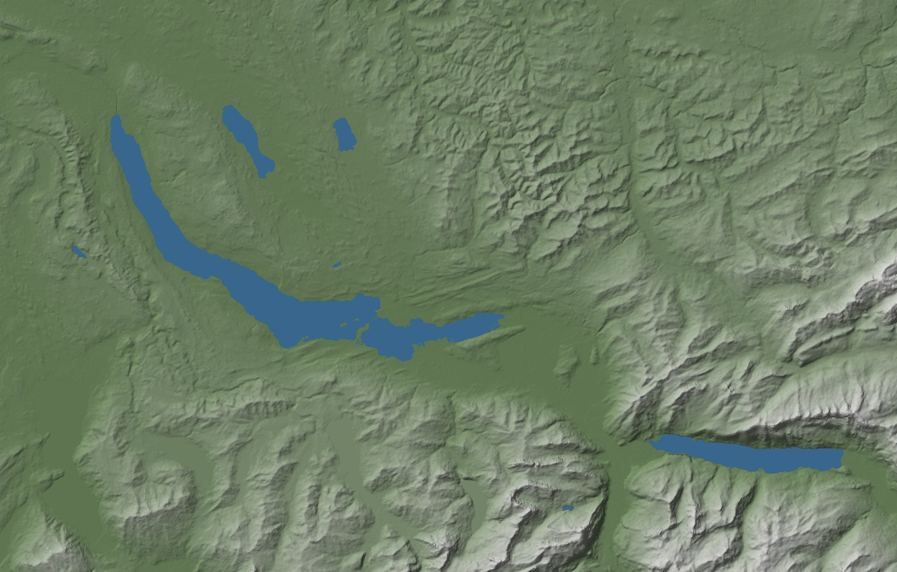

Train ride: the line from above
Relief from the Terrarium tiles, lakes from OSM, the traced track and its stations.

The strip the toy renders from: distance along the line left to right, distance from the track bottom to top. Height relative to the eye; lakes blue.